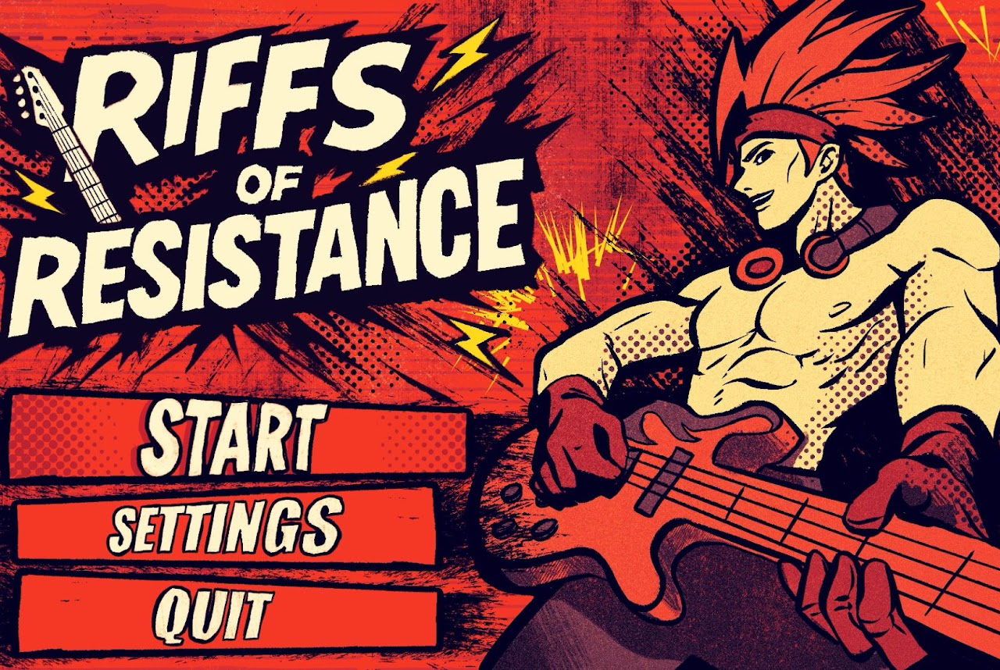

Riffs of Resistance

A rhythm-based action game about saving the world from AI-generated music, one robot at a time.
Created in Unity 6 by
- Ivan Karkov – Assistant Producer, 3D Artist, 3D Animator
- Jacob Pollard – Technical Artist, 3D Animator
- Nathan Camilleri – Gameplay Programmer
- Lily Rout – 2D Artist
- Nico O'Sullivan – 2D Artist
- Skye O'Niell – 3D Artist
- William Bartlett – Composer, Sound Programmer
Riffs of Resistance was produced by a team of 2nd and 3rd year Griffith University Game Design and Production students for Games Studio 2025. The team was tasked with creating a rhythm-based action game inspired by the likes of Hi-Fi Rush and the Devil May Cry series.
Individual Contribution
My role in this project was as composer, sound designer and sound programmer. Despite the initial pitch of the game being heavily focused around rhythm aspects, I joined the team halfway through development, where I was solely responsible for planning and assisting in implementing rhythm elements, as well as designing SFX and composing music for the project. I also used the project as an opportunity to learn the audio middleware FMOD, which ended up being essential to adding robust musical elements to the game.
Deliverables
- 4 unique music tracks
- 24+ SFX
- Designed & implemented a framework for syncing gameplay events to music using the FMOD Unity API
SFX Design
SFX design was a key component to bringing this project, and the game's world, to life. A challenging part of designing and producing SFX for this project was balancing realism and stylisation: keeping players immersed while still conveying fictionality, and implementing conventional non-diegetic audio in a satisfying way. Throughout production, I designed multiple versions of key SFX, obtaining feedback from our producers and playtesters on aspects such as impact and clutter. Here is a showcase reel of some of the sound design on this project:
Music and Implementation
In this project, I was also tasked with composing the game's soundtrack. At first, the game's visuals were very grimy and dystopian, so initially the soundtrack leant toward a synth-laden DnB style. However, after the visuals changed to a more comic book, hyper-stylised aesthetic, I approached the team about pivoting to a more hip-hop/rock/jazz soundtrack, heavily inspired by games such as MadWorld and Persona 3, genres I am much more comfortable composing in.
One of the main considerations while composing this soundtrack was cohesion, especially for tracks L1M1 and L1M2, as they had to flow in and out of each other with very little notice based on the current gameplay situation. Knowing that I could quantise track changes, I wrote both L1M1 and L1M2 on a bar-by-bar basis, where each bar could stand alone as its own musical idea (having some form of resolution each bar), while still contributing to the greater song. I also used similar instrumentation across both tracks, specifically the rhythm guitar prominent in L1M1, to ground the listener and help with transitioning by keeping a constant element.
FMOD and Rhythm Elements
This project was also an opportunity for me to learn about using audio middleware, specifically FMOD. I chose FMOD because of its ease of integration, beginner-friendliness, and the multitude of resources for the specific use cases required in our project.
Using FMOD and its scripting examples, I set up a MusicManager prefab for the scene to handle loading/playing the background music, reading timeline data for use in the rhythm-based gameplay elements, and transitioning between loops based on the in-game combat state. Using these features, our gameplay programmer was able to sync in-game events to the music (down to the beat), as well as change the background music on the fly to create a more immersive experience.